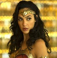

batman
Bruce Wayne es el único personaje que se identifica como Batman y aparece en Batman, Detective Comics, Batman y Robin, y Batman: The Dark Knight. Dick Grayson vuelve al manto de Nightwing.


harley queen
La creación de Harley Quinn fue una idea de último minuto propuesta por el escritor estadounidense Paul Dini para modificar una escena del vigésimo-segundo episodio de Batman: la serie animada.

wonder woman
La Mujer Maravilla o Wonder Woman, tal es su denominación original en el idioma inglés, es una superheroína que fuera creada en la década del cuarenta del siglo pasado por el autor William Marston.